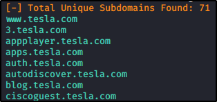
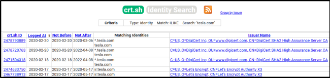

Hunting Subdomains - Part 1
Used for Web Pentesting or when you encounter a Web Site in your Internal / External testing.
Try to find for “dev”, “test” or domains or domains with sensitive information.
You can use https://github.com/tomnomnom/httprobe to probe a list of domains and see which domain works
Example:
*.testa.com # * is a WildCard: Mean everything you can
Tool suggested:
Sublist3r (use -h to get more info on its usage)
You can select the number of threads with “-t”




Another tool:
https://crt.sh/ (Use “%” as a wildcard)

